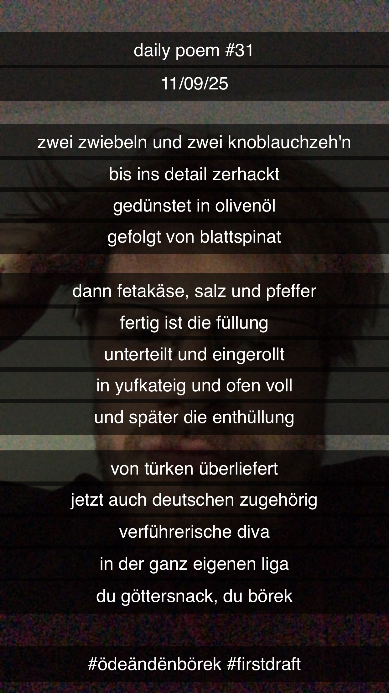

Öde än dën Börek
[31]Zwei Zwiebeln
Und zwei Knoblauchzeh'n
Bis in's Detail zerhackt –
Gedünstet in Olivenöl,
Gefolgt von Blattspinat –
Dann Fetakäse,
Salz und Pfeffer,
Fertig ist die Füllung –
Unterteilt und eingerollt
In Yufkateig und Ofen voll
Und später die Enthüllung;
Von Türken überliefert –
Jetzt auch Deutschen zugehörig –
Verführerische Diva
In der ganz eigenen Liga,
Du Göttersnack, du Börek!
